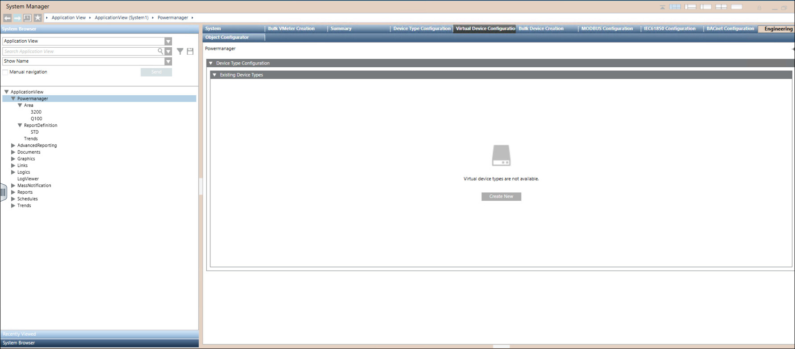

Create Virtual Device Type
- In System Browser, select Application View > Powermanager.
- Select Virtual Device Configuration tab.
- Navigate to Device Type Configuration expander > Existing Device Type expander.
- Click Create New.

- Navigate to Group Mapping expander.
- Drag and drop the node from Application View to the Measurement Point Name and select Group from the dropdown list.
- Description and Data Type will be auto populated based on the selected measurement point.
- For new measurement point, click New and enter Measurement Point Name.
- Description, Data Type, Group will be auto populated.
NOTE: You can create up to 50 measurement points. - Click Next.
- In Measurement Points expander, configure parameters Unit, Display, Archive and Alarm.
- By default, Subscribe will be selected.
- Select the measurement point and enable the Alarm checkbox to proceed with alarm configuration.
- In Alam Configuration expander, select the Alarm Type and configure parameters Range, Event Test, and Normal Test.
- In Favorites, configure parameters Measurement Point, Parameter, Duration and Interval.
- Navigate to Trend and click New to add different Groups and Measurement Points.
NOTE: For one Group you can add Seven Trends. - Click Next.
- In Feature expander, Power period radio button will be enabled by default, if any of the measurement point group is selected as power period.
- In Default Measurement Points expander, configure parameters Energy and Power.
NOTE 1: Select Counter group for Active Energy and Reactive Energy measurement points. Select Power group for Active Power and Reactive Power measurement points.
NOTE 2: To configure Sankey report for virtual device, it is mandatory to configure Default Measurement Points. - Navigate to Additional Inputs.
- By default, Library Name Field is available. If required, you can drag and drop Library Name.
- Provide the Device Type Name and Device Type Description.
NOTE: By default, device type is created with Library Name under project node. Library Name cannot be edited. - Click Create Device Type.
- Click Ok.
- Device type is created successfully.